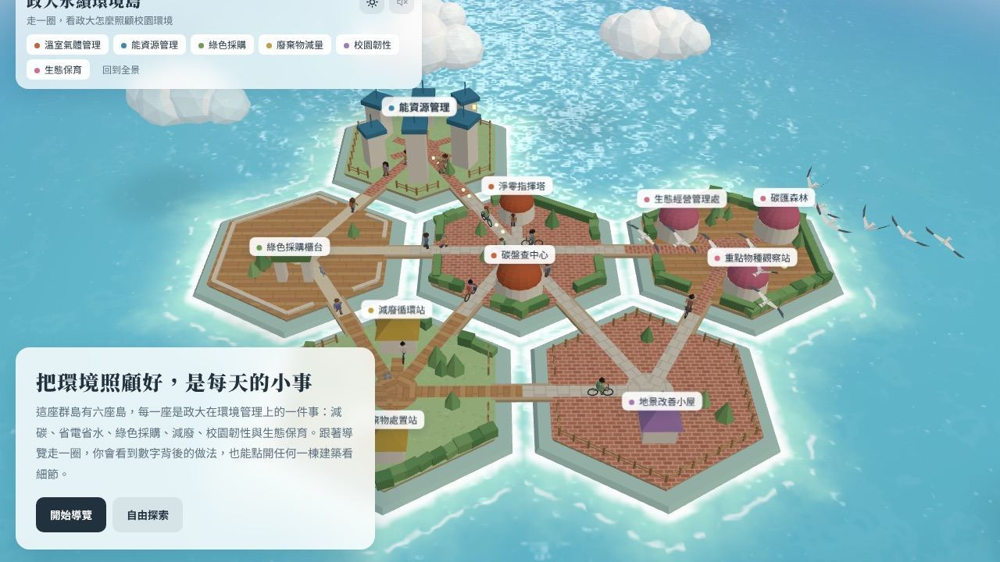
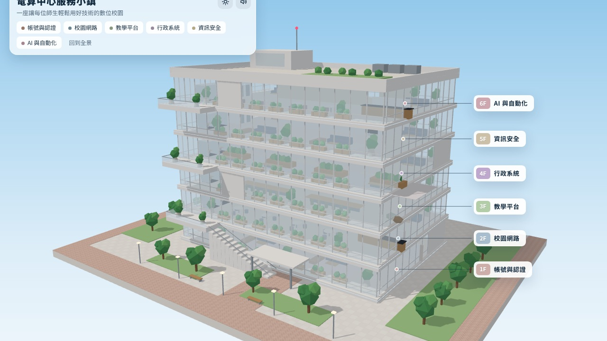
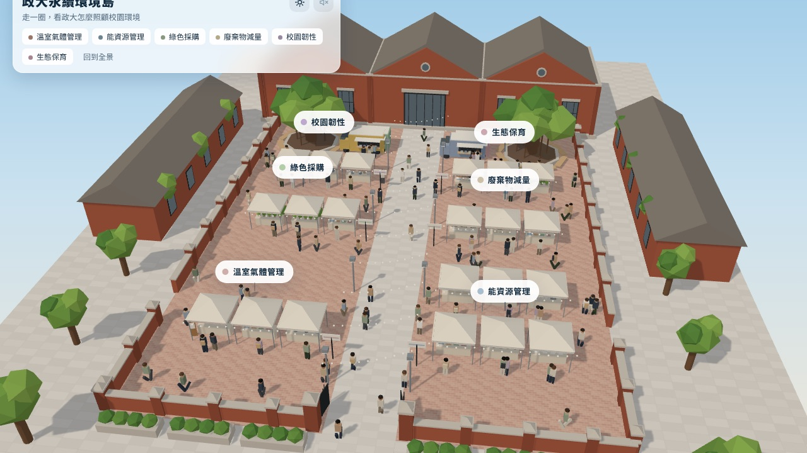

3D導覽小幫手
一份資料，
一座小世界。
把介紹資料交給 AI，整理成六張表。預覽滿意，就輸出一個可以用滑鼠與手指逛的 3D 導覽網站。

- 6張表，整理好資料
- 3種場景可選
- 1個 HTML 檔，離線也能開
逛一圈，就看懂。
每個分類是一座島、一層樓、一個市集分區。每個項目是一棟建築、一間房、一個攤位。
鏡頭帶著你走一圈。想看細節，點開任何一處就好。
資料不再只是一份文件。它是一個可以走進去的地方。
三種場景，任你選。


以上都是示範成品。網站會依電腦時間，自動切換白天與夜晚。
四個步驟，不用寫程式。
開啟小幫手，先按「載入範例看看」，了解效果。
請 AI 把你的原始資料整理成六張表。頁面左上有說明，還有可以直接複製的指令。
把六張表貼到左邊，即時預覽。右上可以切換場景。
滿意了，按「下載我的導覽網站」。你會得到一個單一 HTML 檔，離線也能開啟。
適合這些時候。
單位介紹、服務總覽、新生導覽、計畫成果。只要有一份介紹資料，想讓人願意逛一逛，就適合。
使用時，瀏覽器需要支援 WebGL。近幾年的 Chrome、Edge、Safari、Firefox 都可以。
換你做一座。
免帳號，打開就能開始。先載入範例，看看效果。